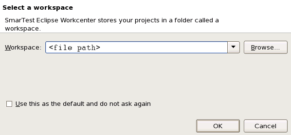

Creating and opening a workspace
About this task
When you start the SmarTest Work Center the following dialog box appears:

As default SmarTest proposes the workspace location /home/<user name>/workspace_<revision>. Advantest recommends to name the workspace according to the used SmarTest version using 3 digits, for example workspace_7.1.4.
Check Use this as the default and do not ask again to always open the specified workspace.
To remove the default setting, go to and check the Prompt for workspace on startup option.
Procedures
Creating a new workspace
- Choose a name and location:
- Use the proposed workspace location and name
- Use a different workspace location or name:
Type the path and a name for the new workspace.
- Click OK.
SmarTest opens the workspace. For warnings or error messages, see Warnings and error messages when starting SmarTest.
Opening an existing workspace
- Click the Browse button to select the workspace you want to open.
- Click OK.
SmarTest opens the workspace. For warnings or error messages, see Warnings and error messages when starting SmarTest.
Switching to another workspace
- Click File > Switch Workspace.
- Select the workspace you want to use.
SmarTest closes the current workspace and opens the selected one. For warnings or error messages, see Warnings and error messages when starting SmarTest.
Functional changes
- Introduced before SmarTest 6.3.2
- SmarTest 6.5.0: Switch workspace in SmarTest.